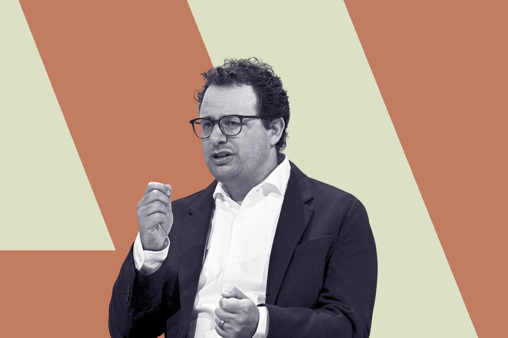

一、导语：一份 300 多页的文件，把三年传闻一次结清
10 月 26 日，Anthropic 正式向美国 SEC 递交 S-1 注册声明，拟以代码 ANT 在纳斯达克全球精选市场上市，承销商为高盛与摩根士丹利。发行股数与价格区间尚未确定，但市场普遍传言募资规模在 1000 亿美元 量级、估值目标 1.5 万亿至 2 万亿美元，最快 11 月 9 日当周启动路演。
从 2023 年起，外界理解这家公司靠的是泄漏、传闻和一堆博客文章。现在终于有了 SEC 审过的数字。而数字本身比传闻更离谱：成立五年，累计融资 1411 亿美元，截至 6 月 30 日账上还有 1317 亿美元 现金及短期投资——也就是说，烧掉不到 100 亿美元，它就做到了单季 168 亿美元的收入。
二、背景：为什么这份文件的分量比一次模型发布更重
过去两年，AI 公司的估值一直是「相信的人定价、不信的人围观」。Anthropic 递交 S-1 意味着这套叙事第一次被放进审计口径：收入要认、成本要摊、关联交易要披露、风险要自己写。对整个行业来说，这是第一次有前沿实验室把「前沿模型生意到底长什么样」摊在阳光下。
时机也值得注意。OpenAI 刚把估值目标下调到 1.25 万亿美元、计划融资至多 300 亿美元；xAI 与 SpaceX 的关系被写进 Anthropic 自己的采购合同里；开源阵营的 Kimi K3.1 Pro 把 3T 级权重免费放出来。Anthropic 选择在这个窗口递表，本质是抢在竞争格局进一步恶化前锁定定价。
三、核心内容：三张表，三个反常识
1. 收入表：五个季度 30 倍，但增速在掉
营收从 2025 年一季度的 3.76 亿美元 涨到 2026 年二季度的 116 亿美元，同比增长 1368%；上半年合计 163 亿美元，三季度据媒体口径约 168 亿美元（S-1 中该项留空待审计）。滚动收入约 350 亿美元，一家成立六年的公司。
真正惊人的是净收入留存率：截至 9 月 30 日约 900%。翻译成人话，一年前付钱的客户现在平均多付九倍。历史上最好的上市 SaaS 是 Snowflake 在 2019 年底的 189%，行业 median 是 110%。口径不完全可比——Anthropic 这个指标排除了 Pro 与 Max 个人订阅、只算「合格客户」——但量级差了一个数量级，仍然没有任何先例。
只是曲线已经开始弯。二季度环比 144%，三季度掉到约 45%。原因之一是 8 至 9 月主动切掉了 5%–7% 的违规收入（主要是拿 Claude 蒸馏自家模型的实验室）。另一个原因更根本：模型是有保质期的。S-1 披露，发布超过六个月的模型贡献不到 20% 收入，最近六个月发布的版本撑起三季度 80% 以上 的营收。

2. 利润表：807 亿亏损是个假数字
所有头条都在写「Anthropic 上半年亏损 807 亿美元」。这个数字真实存在，但基本没有信息量：其中 724 亿美元 来自亚马逊可转债的公允价值变动（账面亏损，转股即消失），剔除后调整净利润为正 26.71 亿美元，上半年实际经营亏损只有 6.93 亿美元。二季度经营利润 9.74 亿美元，是公司史上第一次转正。
至于那个被到处引用的 85% 毛利率，也需要打一层折扣。按 SEC 口径，成本只算服务客户的推理算力，85% 确实成立，看起来像 SaaS。但 Anthropic 自己在文件里承认算力是一个「可互换的池子」——今天卖给客户的模型，是六个月前用研究算力训出来的。把训练算力计入成本，COGS 是 89 亿美元，毛利率掉到 45%，更像一家硬件公司。软件的服务毛利，硬件的研发毛利，两边都得吃。
3. 资产表：1317 亿现金对 8000 亿承诺
真正让人后背发凉的是采购承诺。S-1 披露：向 SpaceX 采购英伟达 GPU，全部产能交付后每月约 31 亿美元，到 2029 年累计最高 1205 亿美元；对微软承诺到 2033 年花 449 亿美元；对谷歌至少 1145 亿美元；对亚马逊十年 1100 亿美元。当前算力支出约 220 亿美元/年，明年将升至约 1200 亿，2028 年约 1550 亿，且绝大部分不可取消。
而收入这端是按用量计费、随时可退的，前五大客户基本没有长约。长债配短收，这是所有分析师都会皱眉的结构。Anthropic 的辩解是：今年收入增长 1368%，算力只增长 300%；且自 Claude 发布以来每个时期需求都超过供给，公司真正经历过风险是「订太少」而非「订太多」。这话成立，前提是下一代模型别翻车。
四、各方反应：投行的兴奋与工程师的冷笑
Evan Armstrong 在 Every 的拆解里给了最克制的一句总结：这是一家「在行业历史上效率最高的规模化公司」，人均年创收 660 万美元（谷歌是 220 万，SpaceX 含 xAI 是 140 万），900% 净留存、85% 服务毛利、1310 亿现金，代价是 8000 亿美元固定义务——而它只能用「接下来六个模型和过去六个一样好」来兑现。
“当你为这家公司定价时，你实际上在为大约 250 个客户关系定价，以及剩下 1650 个客户爬进这个圈层的速度。”
The Verge 从 300 多页里挑出的「怪细节」更能说明公司气质：Dario 去年薪酬约 1800 万美元、总裁 Daniela Amodei 约 1640 万美元；公司为兄妹俩支付 275 万与 129 万美元的安保费用，另有一笔 9.7 万美元的私人飞机私人使用费。风险因素里写着 AI 可能造成「整个保险行业合计都无法承保」的灾难性伤害，也可能发展出某种形式的「感知能力」。竞争对手一栏只列了两家：OpenAI 和谷歌。
治理结构是另一个信号。七位联合创始人通过一个叫 Founder LLC 的实体，在上市后仍将控制 50.1% 的关键事项投票权。对公开市场投资者来说，这是一张「你出钱、我们掌舵」的票。
五、深度解读：它真正的生意是 Claude Code
剥掉 AGI 叙事，招股书里最实在的一段是客户分层。年付 10 万美元以上的组织有 11900 家，九个月涨了八倍；但 2025 年 76% 的收入来自约 1500 家，剩余 24% 由约 4000 万个人用户拼出来。用 Claude Code 的企业用户，前 5% 每月花约 1500 美元；不用 Claude Code 的，月支出不到 75 美元。
这就是全部秘密：模型恰好在写代码这件事上最强，公司自己做了应用层，于是价值留在了自己手里，而不是交给 Cursor 和 Copilot 去赚。垂直整合在 AI 时代重新变成护城河——同时也埋了雷：最大的几个客户恰恰是编程产品，它们有充分动机把 token 路由到当季最便宜的模型，而它们背后的老板（SpaceX、微软）各自都在跑自己的模型项目。
再往前看一层，这份文件其实在给整个行业定基准。85% 的服务毛利 + 45% 的全成本毛利，会成为后续所有 AI 公司被审视的坐标系；900% 的净留存会成为增长故事的新天花板；而 8000 亿美元不可取消承诺，会成为所有人讨论「AI 资本开支是不是泡沫」时被反复引用的分母。
六、总结
一句话：Anthropic 用 1368% 的增速和 900% 的净留存证明了前沿模型可以是一门真生意，同时用 8000 亿美元 的不可取消算力承诺证明了它是一门必须一直赢下去的生意——招股书里没有中间地带。